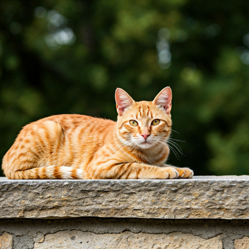
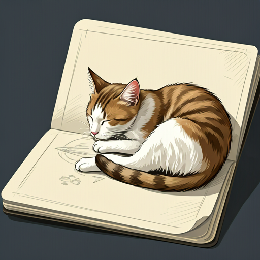
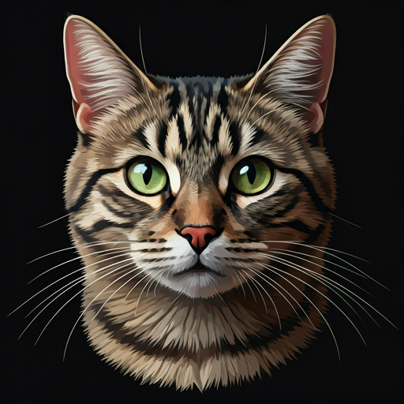
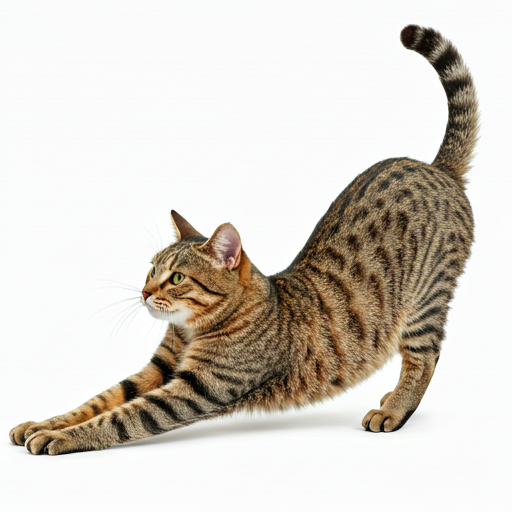
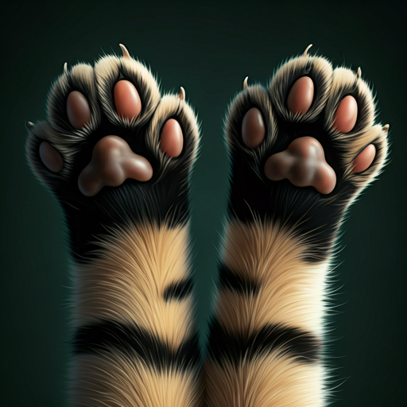
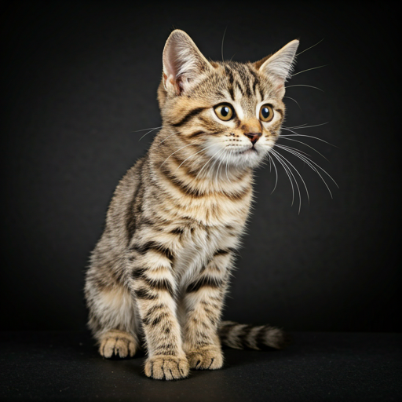

橘子
警惕型
爱晒太阳
大橘
编号: SC-2023-009 • 艺术学院常驻嘉宾
健康
A+
psychology_alt
个性与习惯
大橘是一个极其“双标”的家伙。它对艺术学院的学生非常友好，甚至会主动蹭裤脚，但如果遇到带球运动的人，它会立刻开启“战斗模式”钻进绿化带。
社交属性
熟人限定热情
觅食习惯
拒绝隔夜粮
活动规律
日落准时退场

“它在蹭我的画架，仿佛在指导我构图。”
— 2023.11.12 · 某大一新生
location_on
常出没地点与时空规律
基于近30日的目击记录统计
06:0012:0018:0000:00
高频活跃期 (09:00 - 15:00)
palette
艺术楼中庭 (南)
library_books
图书馆侧门草坪
flatware
第三食堂后勤区
warning
健康与投喂建议
严禁投喂
- block 任何含调味料的人类零食 (尤其火腿肠)
- block 含巧克力、葡萄成分的食物
观察指南
大橘近期有轻微肠胃不适，志愿者正在进行定点喂养。建议大家保持 3米以上 远距离观察，不要过度惊扰其休息。
auto_stories
生命记录时间轴
visibility
2小时前 · 被目击
正在艺术楼南面晒太阳
“大橘在睡觉，肚皮朝天，看起来心情不错。” — @小林
water_drop
昨天 16:45 · 补水记录
志愿者已更换纯净水
艺术楼A点水碗已清洗并重新灌装，大橘喝了大约30ml。
photo_library
3天前 · 档案更新
更新了“冬季换毛”写真



+12
theater_comedy
“个性剧场”
特殊癖好：艺术鉴赏猫
大橘非常喜欢趴在雕塑系的半成品雕塑旁边。有传闻说，如果它在你的作品旁边睡得久，说明你的造型感得到了它的认可。
保留节目：捕影大师
每天下午三点，当夕阳斜射进艺术楼走廊，它会准时开始追逐自己的影子，长达十分钟，非常有仪式感。
